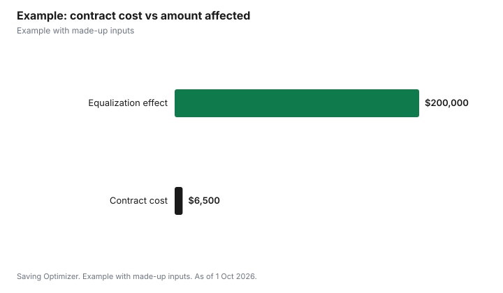

Weddings · Canada
Marriage Contracts (Prenups) in Ontario: What They Can Cover, What Courts Can Set Aside, and Cost Drivers
In Ontario, a marriage contract (often called a prenup) is a written agreement between two people who are married or plan to marry that sets out how property, debts and support will be handled if they separate or one of them dies. Under the Family Law Act it must be in writing, signed by both and witnessed. It cannot decide parenting time or decision-making for children, and any term limiting a spouse's rights to the matrimonial home is unenforceable. A court can set aside a contract if either person hid significant assets or debts, or did not understand what they signed, which is why full financial disclosure and independent legal advice for each person are the main cost drivers and the main protection. The Law Society Referral Service offers a free consultation of up to 30 minutes with a lawyer.
Key takeaways
- Must be in writing, signed by both and witnessed (s.55).
- Can cover property, support and other matters; not parenting time or decision-making (s.52).
- Cannot limit matrimonial home rights (s.52(2)).
- Can be set aside for non-disclosure or lack of understanding (s.56(4)).
- A cohabitation agreement becomes a marriage contract when you marry (s.53(2)).
- Example with made-up inputs: cost vs what is protected.
What a marriage contract can cover
| Topic | Allowed? |
|---|---|
| Ownership or division of property | Yes |
| Spousal support obligations | Yes |
| Directing children's education and moral training | Yes |
| Decision-making responsibility or parenting time for children | No |
| Limiting rights to the matrimonial home | Unenforceable |
| Any other matter in settling your affairs | Yes |
The default rule a contract can change
Without a contract, section 5(1) of the Family Law Act says that when spouses separate with no reasonable prospect of reconciling, or on divorce, the spouse with the lower net family property is entitled to half the difference between the two. Section 4(2) excludes some property from net family property, including property other than a matrimonial home acquired by gift or inheritance from a third person after the marriage, life insurance proceeds, certain damages, and property that the spouses have agreed by a domestic contract to exclude. Section 5(2) applies a similar rule on death where the deceased spouse's net family property is larger. A marriage contract can change how this works for you, for example by excluding a business, a family cottage that is not the matrimonial home, or growth in pre-marriage investments.
What makes a contract fail
- Not in writing, not signed by both, or not witnessed: unenforceable under s.55(1).
- Failure to disclose significant assets, debts or other liabilities when signed: can be set aside under s.56(4)(a).
- A party did not understand the nature or consequences: can be set aside under s.56(4)(b).
- Other grounds under general contract law, such as duress or unconscionability: s.56(4)(c).
- Child support terms unreasonable under the child support guidelines: may be disregarded under s.56(1.1).
- Terms on children's education, moral training or parenting: may be disregarded in the child's best interests under s.56(1).
Independent legal advice
The Act does not list independent legal advice as a formal requirement, but because a contract can be set aside if a party did not understand it, each person having their own lawyer review and explain it is a common way to show understanding. Ask each lawyer whether they will provide a certificate of independent legal advice to attach to the contract. Start early, well before the wedding, so neither person feels pressured to sign.
Gathering disclosure
Because non-disclosure is a ground for setting a contract aside, collect the documents early and exchange them through your lawyers. A typical package includes:
- Recent tax returns and notices of assessment.
- Bank, investment, RRSP, TFSA and pension statements.
- Property ownership, mortgage statements and appraisals.
- Business financial statements and any valuation.
- Loans, credit card balances, lines of credit and student debt.
- Expected inheritances or trust interests, if known.
Cost drivers
| Driver | Why it matters |
|---|---|
| Complexity of assets | Businesses, real estate, pensions and trusts need more drafting |
| Disclosure | Gathering statements, valuations and debts takes time |
| Negotiation rounds | Each revision adds lawyer time on both sides |
| Two lawyers | Each person pays for their own advice |
| Valuations | A business or property appraisal may be needed |
| Timing | Rushed contracts can cost more and invite claims of pressure |
Lawyers may charge a flat fee or by the hour. The Law Society of Ontario's Referral Service gives Ontario residents the name of a lawyer for a free consultation of up to 30 minutes, with a response within three business days, which is a low-cost way to ask how they would charge.
Cohabitation agreements
If you live together before marrying, a cohabitation agreement under section 53 can cover the same topics. Section 53(2) says that if the parties marry each other, the cohabitation agreement is deemed to be a marriage contract. Review it before the wedding to make sure it still reflects what you want.
Updating later
Section 55(1) applies to agreements to amend or rescind a domestic contract too: they must be in writing, signed and witnessed. Keep a signed original in a safe place and tell your lawyer where it is. Revisit the contract after major changes such as children, a business, an inheritance or a move to another province, and update disclosure at the same time.
Questions to ask a lawyer
- Do you charge a flat fee or hourly, and what is included?
- What disclosure will you need from both of us?
- How would this contract treat a matrimonial home we buy?
- What happens on death, and should our wills change at the same time?
- How long does it usually take?
- What would make this contract vulnerable to being set aside?
Example with made-up inputs
These numbers are an example with made-up inputs. One partner owns a business worth $300,000 before the marriage. Without a contract, if the business grows to $700,000 by separation, the $400,000 increase forms part of that partner's net family property and could add $200,000 to an equalization payment. Two lawyers at a made-up $2,500 each plus a $1,500 business valuation cost $6,500. A contract excluding the business growth, signed with full disclosure, changes that outcome. If the business does not grow, or the couple never separates, the $6,500 is the cost of certainty.
| Item | Amount |
|---|---|
| Business growth during marriage | $400,000 |
| Half of that growth (equalization effect) | $200,000 |
| Two lawyers plus valuation | $6,500 |

Common mistakes
- Signing days before the wedding.
- Skipping full disclosure of assets and debts.
- Using one lawyer for both people.
- Trying to settle parenting time in advance.
- Not updating wills alongside the contract.
Related: merging finances after the wedding and 2027 wedding budget.
Sources
- Family Law Act, R.S.O. 1990, c. F.3, ss. 4, 5, 52, 53, 55, 56, Ontario e-Laws, as of 1 Oct 2026.
- Law Society of Ontario, Law Society Referral Service, as of 1 Oct 2026.
- Business values, lawyer fees and valuation costs in the example are made-up inputs.
Frequently asked questions
Is a prenup legal in Ontario?
Yes. Section 52 of the Family Law Act allows marriage contracts between people who are married or intend to marry.
What can't a marriage contract cover in Ontario?
Decision-making responsibility or parenting time for children, and any term limiting a spouse's rights to the matrimonial home is unenforceable.
What makes a marriage contract valid?
It must be in writing, signed by both parties and witnessed under section 55(1).
Can a court set aside a prenup?
Yes, under section 56(4), if a party failed to disclose significant assets or debts, did not understand the contract, or under general contract law.
Does a cohabitation agreement become a marriage contract?
Yes. Section 53(2) says it is deemed to be a marriage contract if the parties marry each other.
How can I find a family lawyer in Ontario?
The Law Society Referral Service offers a free consultation of up to 30 minutes with a lawyer.
Researched and drafted with AI assistance and fact-checked against official Canadian sources. How we create content.
Disclosure: Saving Optimizer may earn a commission if a partner link is added later. No partnership is claimed on this page. Education only, not legal advice.